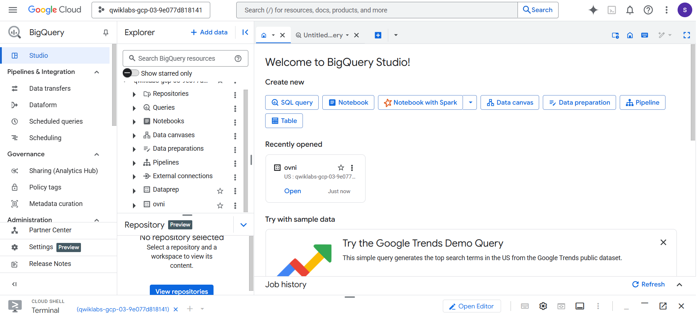
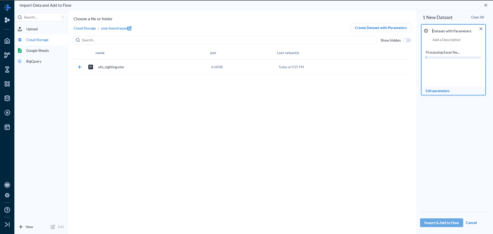

1. Creación del Bucket en Google Cloud Storage
Como primer paso del proyecto, fue necesario habilitar un espacio de almacenamiento en la nube para
cargar y
centralizar los datos. Para ello, se creó un bucket en Google Cloud Storage con el nombre
jose-huentrepan. Este bucket actúa como contenedor del archivo original
ufo_sightings.xlsx, el cual contiene más de 18000 registros de avistamientos de OVNIs.
2. Creación del Dataset en BigQuery (Dataprep)
Posteriormente, se creó un proyecto de preparación de datos llamado ovni. Este proyecto permitió conectarse al bucket anteriormente creado, analizar la estructura del archivo y establecer la base para las transformaciones posteriores. Esta conexión entre Cloud Storage y BigQuery es clave para integrar los datos al ecosistema analítico.
3. Conexión del Dataset en Alteryx Designer Cloud
En esta etapa, se utilizó Alteryx Designer Cloud (Dataprep) para importar el dataset desde el bucket. Al hacerlo, se inicia un flujo visual de trabajo que permite revisar, explorar y transformar los datos sin necesidad de escribir código. Esto facilitó la detección de columnas inválidas, nulos, valores atípicos y errores de formato.
4. Preparación y Limpieza de Datos
Se construyó una receta de limpieza que incluyó múltiples pasos esenciales para asegurar la calidad del análisis. Algunas de las acciones realizadas fueron:
- Eliminación de registros con campos críticos vacíos (como fecha, país o forma de avistamiento).
- Renombramiento y estandarización de columnas (convertir los nombres de estados a mayúsculas).
- Conversión de latitudes y longitudes a escala decimal y filtrado por coordenadas válidas.
- Corrección de formatos de texto en las columnas categóricas como
UFO_shape.
Gracias a este proceso, se redujeron los errores, se homogenizaron los datos y se dejaron listos para su carga en BigQuery.

5. Consultas SQL en BigQuery
Una vez transformados y cargados los datos en BigQuery, se realizaron varias consultas SQL para extraer métricas significativas del fenómeno OVNI. Algunas de las consultas realizadas fueron:
- Total de avistamientos: recuento global de registros válidos.
- Top 5 formas de OVNI: clasificación por forma visual reportada con más frecuencia.
- Avistamientos por estado: distribución geográfica dentro de EE.UU.
- Frecuencia anual: evolución de los reportes por año, permitiendo detectar patrones temporales.
Estas consultas sirvieron como base para la generación de visualizaciones más claras y comprensibles.

6. Visualizaciones en Looker Studio
Finalmente, se diseñó un dashboard interactivo en Looker Studio (antes Google Data Studio), donde se representaron gráficamente los principales hallazgos:
- Gráfico de barras con el total de avistamientos por forma de OVNI.
- Mapa geográfico que muestra la concentración de reportes por estado.
- Serie temporal para visualizar el comportamiento año a año.
- Distribuciones de duración del avistamiento.
Estas visualizaciones permiten identificar con facilidad tendencias, concentraciones y comportamientos atípicos que de otra manera serían difíciles de detectar.